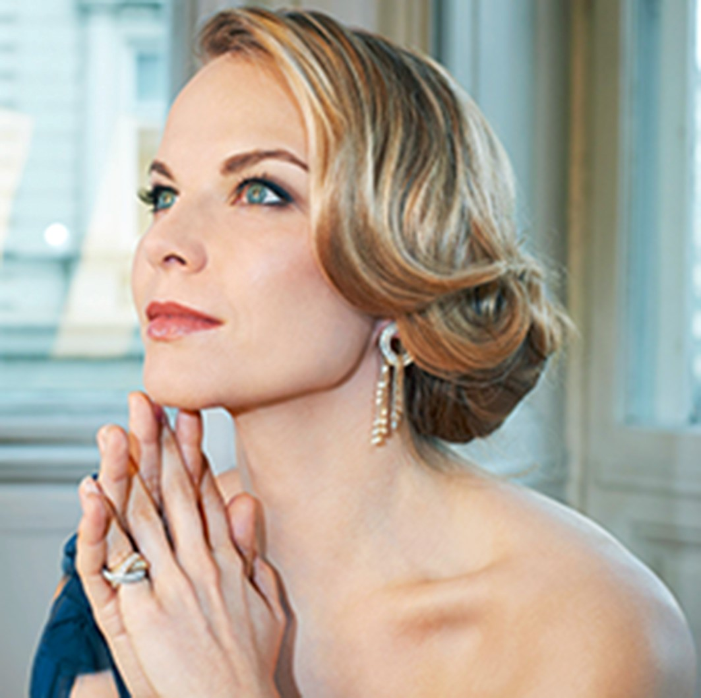
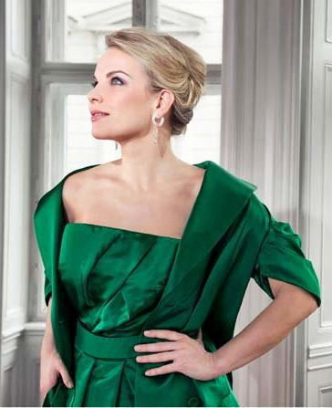
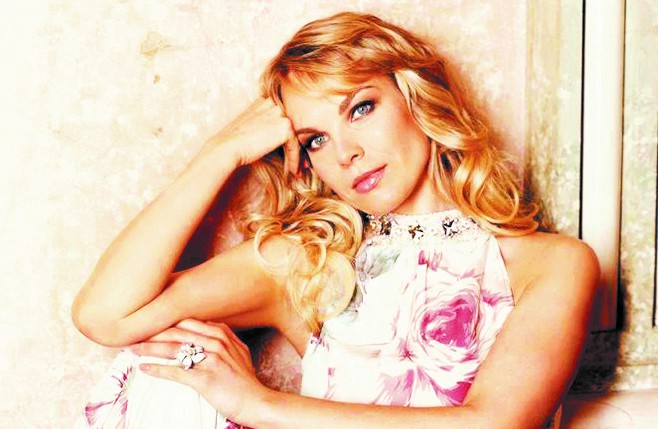

Defining Role
Carmen
— Royal Opera House & Metropolitan Opera —

現代オペラ界の頂点に君臨するエリーナ・ガランチャ。日本でも絶大なファンを持ち、オペラファンの間で彼女を知らない人はいないだろう。音楽紙『GRAND OPERA』（音楽之友社）のオペラ歌手投票では、アンネ・ゾフィー・フォン・オッター、チェチーリア・バルトーリといった世界的歌手を押さえ堂々の１位を獲得しており、その人気と実力は揺るぎないものとなっている。
音楽界が常に新しい才能、アーティストを送り出していくということはなんと素晴らしいことだろう。その中で、特別なのがラトヴィア人のメゾ・ソプラノ歌手エリーナ・ガランチャである。彼女はオペラの舞台、コンサート・ホールではすでに重要な位置を占めている。彼女は非常に才能があり、優れたヴォーカル技術を持ち、自分の才能を伸ばすための正しいレパートリーを選んでいる。これは彼女の輝かしい将来を保証するものであろう。
— Boris Inson過去20年以上にわたってオペラ界のスターとして頂点で活躍を続けるエリーナ・ガランチャの偉業を達成できた歌手は、他にはほとんどいないだろう。ラトヴィア生まれのメゾ・ソプラノが演じる象徴的な主役は常に世界中で称賛されている。

彼女は、演じるそれぞれの役との深いつながりを築くものを感じ、自らの中に深く刻み込む。特別な感覚と情熱的な声から、圧倒的な存在感、魅惑的なカリスマで完璧なバランスを作り上げる、まさに稀有なアーティストである。
世界的に有名なオペラハウス — メトロポリタン歌劇場、ロイヤル・オペラ・ハウス、ウィーン国立歌劇場、ベルリン国立歌劇場 — で代表的な演目の主演を演じ、女性歌手として最年少で宮廷歌手（Kammersängerin）の称号を授与された。

2005年にドイツ・グラモフォンの専属アーティストとなり、これまでに7枚のソロアルバムをリリース。そのうち5枚がエコー・クラシック賞（ECHO Klassik）を受賞している。
『Aria Cantilena』はECHO Klassik "Singer of the Year"、『Bel Canto』は BBC Music Magazine Award、『Romantique』は ECHO Klassik 2013 ベスト・ソロ・レコーディング賞を受賞。代表的な公演は DVD やドキュメンタリーとして世界中に届けられている。
1999年、ニコラウス・アーノンクール指揮のもと、モーツァルト「皇帝ティートの慈悲」（Annio役）でザルツブルク音楽祭にデビューしたことが国際的な突破口となった。「カヴァレリア・ルスティカーナ」（Lola役）でウィーン国立歌劇場にデビューし、のち専属ソリスト歌手として頭角を現す。
出演演目には、リッカルド・ムーティと共演した「フィガロの結婚」（Cherubino役）、「ばらの騎士」（Octavian役）、テレビ放映された「コジ・ファン・トゥッテ」のヴェルサイユ公演などがあり、現在までに150以上の演目に出演している。2003年には「コジ・ファン・トゥッテ」（Dorabella役）でロンドンのロイヤル・オペラ・ハウス、「皇帝ティートの慈悲」（Sesto役）でベルリン国立歌劇場のデビューも果たした。
2008年、「セビリアの理髪師」のロジーナでメトロポリタン歌劇場にセンセーショナルなデビュー。続く2009年、ロイヤル・オペラ・ハウス、メトロポリタン歌劇場でのリチャード・エアー演出による「カルメン」では、ロベルト・アラーニャを相手役に務め、世界中の1500以上の劇場でその模様がライブビューイングとして放送された。
アンナ・ネトレプコと共演しウィーン交響楽団とのDVD収録、スカラ座でのリッカルド・シャイー指揮ヴェルディ「レクイエム」、ドレスデン・シュターツカペレでのクリスティアン・ティーレマン指揮ベートーヴェン「ミサ・ソレムニス」、グスターヴォ・ドゥダメル指揮ベルリン・フィルとのニューイヤーズ・イヴ・コンサートなど、世界最高峰の指揮者・楽団との共演を重ねている。